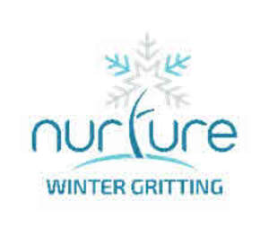
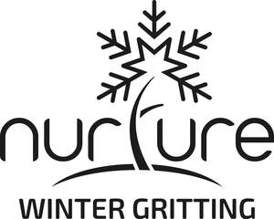
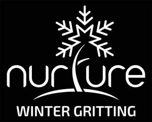

Trade Mark Journal No.2025/040 3 October 2025
UK00004251581 19 August 2025 (37,39,42,44,45)
Mark 1

Mark 2
Mark 3

Mark 4

- Class 37
- Building, construction and demolition services; Installation and repair of landscaping; Building maintenance; Building repair; Interior and exterior cleaning of buildings; Maintenance and repair of building contents; Maintenance and repair of office buildings; Maintenance and repair of residential buildings; Maintenance and repair of commercial buildings; Cleaning services; Concrete repairs; Fence erection services; Glazing, installation, maintenance and repair of glass, windows and blinds; Heating, ventilation and air-conditioning installation, maintenance and repair; Clearing and cleaning gutters; Plumbing installation, maintenance and repair; Lift and elevator installation, maintenance and repair; Extermination of pests; Pest control; Cleaning equipment hire; Rental of tools, plant and equipment for construction, demolition, cleaning and maintenance; Carpentry services; Civil engineering construction, repairs and maintenance; Clearing of tree-roots; Hire of tree pullers; Painting and decorating services; Pest control services; Extermination, disinfection and pest control; Pest control services, other than for agriculture, aquaculture, horticulture and forestry; Proofing of buildings, premises, homes and structures against pest and vermin access; Vermin exterminating, other than for agriculture, aquaculture, horticulture and forestry; Fumigation of buildings, premises, homes and structures against pest and vermin activity; Installation of pest control apparatus; Snow removal; Snow removal services; Salt spreading services to prevent and melt ice and snow; Grit spreading services to prevent and melt ice and snow; Installation and maintenance of irrigation systems; Installation and maintenance of interior and exterior displays, furniture and shelving for plants and flowers; Advisory, consultancy and information services relating to all of the aforementioned services.
- Class 39
- Transport; Packaging and storage of goods; Travel arrangement; Transportation, packaging, storage, distribution and delivery of gritting and de-icing materials; Filling and refilling of gritting machines and gritting containers; Advisory, consultancy and information services relating to all the aforementioned services.
- Class 42
- Scientific and technological services and research and design relating thereto; Industrial analysis and research services; Design services; Engineering services; Environmental consultancy; Engineering design; Civil engineering; Civil engineering consultancy; Civil engineering design and drawing services; Civil engineering planning services; Measuring the environment within civil engineering structures; Structural engineering services; Structural engineering drawing and design services; Computer-aided engineering design and drawing services; Asset integrity engineering services; Inspection of buildings and grounds for repairs, corrosion, structural integrity and passive fire prevention; Engineering services for the inspection and analysis of structures; Land surveying to identify ground profiles; Consultancy services relating to geotechnics; Preparation of technical engineering reports; Software as a service; Platform as a service; Technical advice relating to fire prevention; Contaminated land specialist consultancy (engineering services) including site investigation, historical appraisal, geological appraisal, environmental appraisal; Consultancy relating to contaminated land risk assessment and remediation; Environmental management consultancy planning and design of construction environmental manage plans; Surface water management plans and sustainable urban drainage systems; Engineering consultancy relating to environmental impact assessments; Environmental impact assessments; Engineering consultancy relating to ecology surveys and assessments; Ecology surveys and assessments; Conducting ecological appraisals; Consultancy services relating to geotechnics ecology, geology and hydrogeology; Conducting environmental risk assessments; Land surveys; Preparation and provision of technical reports, technological reports and engineering reports; Design and inspection of sustainable drainage systems (SuDS); Advisory, information and consultancy services relating to carbon reduction, energy management and energy efficiency; Research in the reduction of carbon emissions; Information, advisory and consultancy services relating to energy management and efficiency; Consultancy in the field of energy saving; Energy auditing; Advisory services relating to energy efficiency; Consultancy in the field of energy-saving; Design and development of energy management software; Engineering services relating to energy supply systems; Development of energy and power management systems; Recording data relating to energy consumption in buildings; Professional consultancy relating to the conservation of energy; Professional consultancy relating to energy efficiency in buildings; Certification services for the energy efficiency of buildings; Advisory services relating to the use of energy; Design and development of regenerative energy generation systems; Engineering services in the field of energy technology; Technical advice in connection with energy-saving measures; Providing technical advice relating to energy-saving measures; Technological consultancy in the fields of energy production and use; Technological analysis relating to energy and power needs of others; Technological consulting services in the field of alternative energy generation; Conducting research and technical project studies relating to the use of natural energy; Consultancy relating to technological services in the field of power and energy supply; Design and development of software for control, regulation and monitoring of solar energy systems; Provision of information concerning research and technical project studies relating to the use of natural energy; Advisory services relating to architecture; Architecture; Architecture consultancy services; Architecture design services; Architecture services; Architecture services for the preparation of architectural plans; Computer aided design services relating to architecture; Consultancy in the field of architecture and construction drafting; Design services for architecture, and interior and exterior design for buildings; Engineering services relating to architecture; Preparation of reports relating to architecture; Environmental impact assessments for winter maintenance of grounds and assets; Scientific, research and technological services relating to biodiversity, sustainability, environmental issues and green solutions; Scientific, research and technological services relating to biodiversity, sustainability, environmental and green solutions initiatives; Design of interior and exterior plant displays; Design of interior and exterior plant displays for offices; Design services and urban planning services for landscapes and landscape architecture; Energy auditing; Quality audits; Advisory, consultancy and information services relating to all the aforementioned services.
- Class 44
- Agriculture, aquaculture, horticulture and forestry services; Gardening and landscaping services; Design of gardens and landscapes; Landscape design services; Landscape gardening; Gardening advice; Garden and landscape maintenance; Interior and exterior grounds maintenance; Floral design services; Rental of equipment for agriculture, aquaculture, horticulture, gardening, landscaping and forestry; Tree, shrub and plant care services; Garden tree planting; Arboriculture services; Planting of trees, shrubs, plants and flowers; Design and planting of tree, shrubs, flowers, plant and floral displays; Advisory services relating to the selection and laying of turf; Laying of turf; Pest control for agriculture, horticulture, garden and forestry; weed control; Weed killing; Tree surgeon services; Pest control and vermin extermination for agriculture, aquaculture, horticulture and forestry; Advisory and consultancy services relating to weed, pest and vermin control in agriculture, aquaculture, horticulture and forestry; Garden maintenance; Lawn maintenance services; Landscape gardening of floral displays for the interior of buildings; Floral design services; providing community gardening facilities; Garden or flower bed care; Horticulture services; Plant care services [horticultural services]; Advisory services relating to the design of gardens; Design of gardens and landscapes; Garden design services; Horticultural design services; Landscape management; Landscape management plans; Planning and design of gardens; Weed killing services; Treatment of areas to kill weeds; Grounds maintenance activities; Mowing; shrub pruning; Shrub maintenance; Hedge cutting; Hedge pruning; Hedge laying; Lawn care; Lawn cutting; Lawn fertilisation; Lawn scarification; Hollow tining; Irrigation and watering; Landscape construction; Commercial landscaping; Turfing; Seeding; Planting of trees, shrubs, hedges, plants, perennial plants, seasonal bedding plants; Tree works; Arboricultural services; Arboricultural surveys; Tree surveys; Habitat surveys; High level tree works; Crown lifting; Tree pollarding; Canopy lifting; Coppicing; Thinning; Branch removal; Tree felling; Cross-cutting; Chainsawing; Sports pitch installation; Sports pitch maintenance; Football pitch grounds maintenance; Rugby pitch grounds maintenance; MUGA pitch maintenance; Grass and hard surfaced tennis court maintenance; Polo pitch maintenance; Sports arena maintenance; Maintenance and installation of run-ups and fans; Athletics track maintenance; Setting out of sports areas; Lining; Resurfacing; Tarmacking; Hard surface laying; Hire and supply of interior plant and flower displays; Interior plant maintenance; Cut flower arrangements; Cut flower installations; Technical maintenance services to horticultural, agricultural or forestry related machinery, tools or equipment; Bee keeping; Roof gardens; Green roofs; Flower and plant arranging; Flower and plant arrangement design services; Rental of flower and plant arrangements; Consultancy relating to tree planting; Fruit tree cultivation services; Garden tree planting; Planting of trees; Providing information relating to garden tree planting; Pruning of trees; Surgery (tree -); The planting of trees for carbon offsetting purposes; Advisory, consultancy and information services relating to all the aforesaid services.
- Class 45
- Legal services; Regulatory compliance services; Fire prevention consultancy; Health and safety and environmental risk management; Health and safety and environmental risk assessment services; Consultancy services relating to health and safety and environmental regulations; Information services relating to environmental protection regulations; Security assessment of risks; Advisory services relating to environmental regulatory affairs; Contaminated land risk assessment services; Regulatory compliance auditing; Advisory, consultancy and information services relating to all of the aforementioned services.
NURTURE LANDSCAPES LIMITED
Representative: Cameron Intellectual Property Ltd